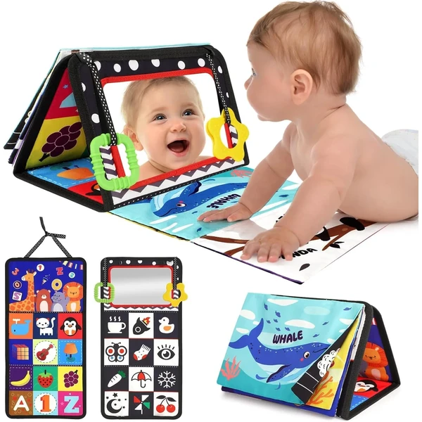
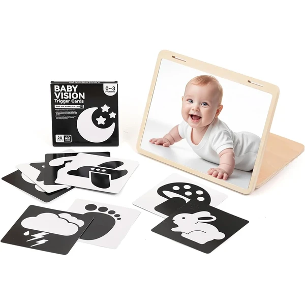
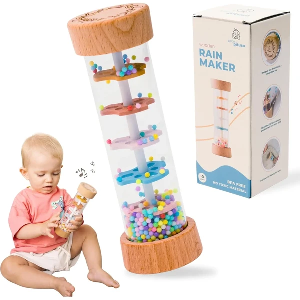
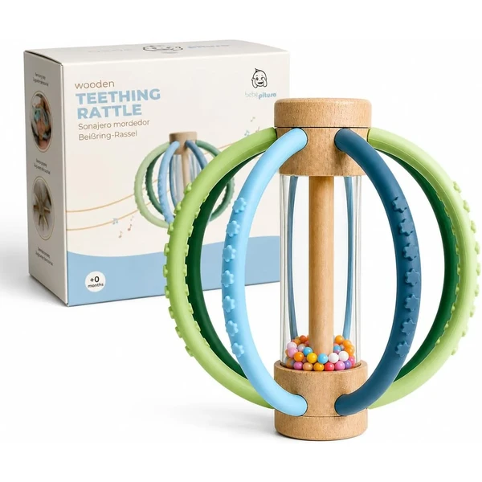
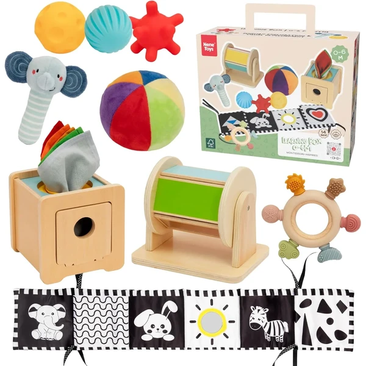
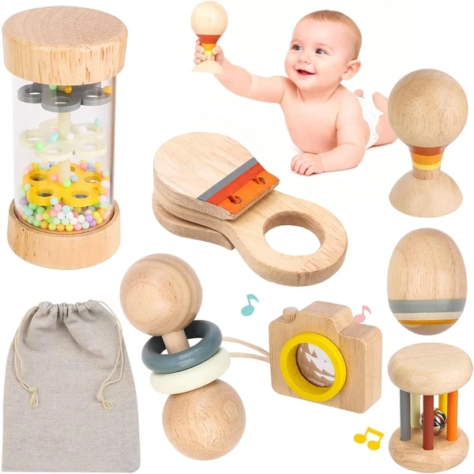
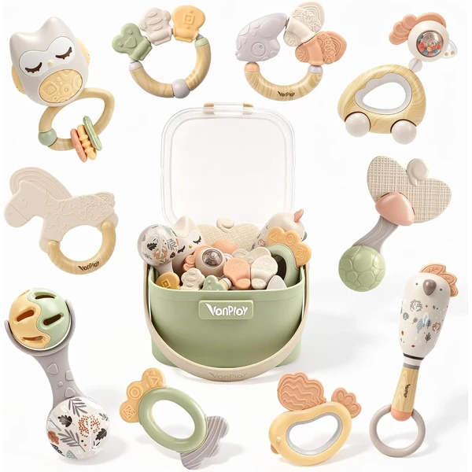
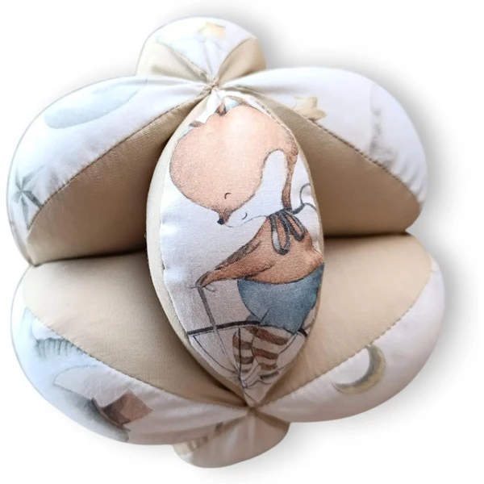
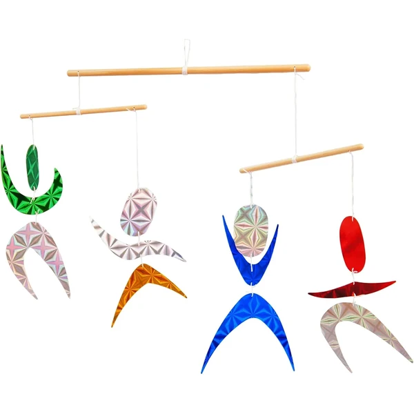
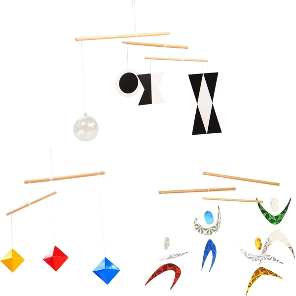

Libro sensorial tummy time URMYWO
Libro plegable de tela con páginas de alto contraste, un espejo de seguridad y una lengüeta de papel crujiente. Pensado para acompañar los ratos boca abajo y despertar la curiosidad visual y táctil del bebé desde los primeros meses.
⭐ ¿Por qué nos gusta?
- ✔ Patrones en blanco y negro que estimulan la vista.
- ✔ Espejo flexible y seguro para el autodescubrimiento.
- ✔ Se pliega y se cuelga fácilmente para llevar de paseo.
💬 Lo que más destacan las familias
Las familias destacan lo bien que capta la atención del bebé durante el tummy time y lo práctico que resulta para llevarlo fuera de casa.
Edad recomendada: 0-6 meses
Ver en Amazon

Espejo Montessori de madera
Espejo de doble cara con marco de madera, pensado para que el bebé se reconozca y siga su propio reflejo. Incluye un espacio para tarjetas de aprendizaje y puede usarse en el suelo o colgado en la cuna o el cochecito.
⭐ ¿Por qué nos gusta?
- ✔ Espejo extragrande para una imagen más nítida.
- ✔ Doble uso: independiente o colgado.
- ✔ Incluye soporte para tarjetas de estimulación visual.
💬 Lo que más destacan las familias
Se valora especialmente el acabado en madera y lo entretenido que resulta para el bebé descubrir su propio reflejo.
Edad recomendada: 0-6 meses
Ver en Amazon

Palo de lluvia sonajero Montessori
Sonajero de madera que combina el sonido relajante de un palo de lluvia con colores suaves y texturas naturales. Un buen aliado para calmar al bebé y, más adelante, acompañar los ratos de tummy time.
⭐ ¿Por qué nos gusta?
- ✔ Sonido suave, ideal para relajar antes de dormir.
- ✔ Madera natural con colores y texturas Montessori.
- ✔ Fácil de sujetar desde los primeros meses.
💬 Lo que más destacan las familias
Los padres suelen destacar el efecto calmante del sonido y lo agradable que resulta al tacto.
Edad recomendada: 0-6 meses
Ver en Amazon

Sonajero mordedor esférico Montessori
Sonajero con forma casi esférica que combina el sonido de un palo de lluvia con tiras de silicona para morder. Pensado para acompañar la dentición y favorecer la coordinación mano-boca desde los primeros meses.
⭐ ¿Por qué nos gusta?
- ✔ Sonido suave al moverlo, sin sobreestimular.
- ✔ Silicona apta para la dentición.
- ✔ Tamaño fácil de agarrar y transportar.
💬 Lo que más destacan las familias
Entre las familias se repite que resulta cómodo para las manos pequeñas y útil tanto en casa como de viaje.
Edad recomendada: 0-6 meses
Ver en Amazon

Caja sensorial 7 en 1 Nene Toys
Set sensorial con libro de alto contraste, pelotas de texturas, una caja de pañuelos para el juego de causa-efecto y un tambor giratorio. Reúne varias actividades Montessori en un mismo pack para los primeros meses de vida.
⭐ ¿Por qué nos gusta?
- ✔ Combina varias actividades sensoriales en un solo set.
- ✔ El libro en blanco y negro ayuda a fijar la mirada.
- ✔ El juego de pañuelos favorece la coordinación mano-ojo.
💬 Lo que más destacan las familias
Las familias valoran tener varias propuestas sensoriales en un mismo pack, ideal para ir variando la estimulación del bebé.
Edad recomendada: 0-6 meses
Ver en Amazon

Sonajeros Montessori de madera
Set de sonajeros de madera con formas y sonidos variados, entre ellos un palo de lluvia. Cada pieza está pensada para el tamaño de las manos del bebé, con distintas texturas y sonidos suaves para explorar.
⭐ ¿Por qué nos gusta?
- ✔ Varias piezas con sonidos y texturas diferentes.
- ✔ Madera natural, ligera y fácil de agarrar.
- ✔ Buena opción para regalar en un baby shower.
💬 Lo que más destacan las familias
Se valora el conjunto por la variedad de piezas y por tratarse de un material natural, agradable al tacto para el bebé.
Edad recomendada: 0-6 meses
Ver en Amazon

Set de sonajeros y mordedores
Set de diez sonajeros y mordedores con distintos tamaños, formas y texturas. Pensado para acompañar desde los primeros meses hasta la etapa de dentición, con piezas fáciles de sujetar y explorar con las manos y la boca.
⭐ ¿Por qué nos gusta?
- ✔ Diez piezas con texturas y sonidos distintos.
- ✔ Tamaño adaptado a manos pequeñas.
- ✔ Útil también durante la dentición.
💬 Lo que más destacan las familias
Entre los comentarios se repite que es una buena forma de tener variedad de sonajeros y mordedores a mano sin comprarlos por separado.
Edad recomendada: 0-6 meses
Ver en Amazon

Pelota Montessori sensorial de tela
Pelota sensorial de tela hecha a mano en España, compuesta por gajos de algodón con costuras marcadas al tacto. Por su forma no rueda más de un metro, lo que anima al bebé a desplazarse para alcanzarla.
⭐ ¿Por qué nos gusta?
- ✔ Fácil de agarrar desde los primeros meses.
- ✔ Fomenta el gateo al no rodar lejos.
- ✔ Tela 100% algodón, lavable a máquina.
💬 Lo que más destacan las familias
Se valora el tacto suave de la tela y que sea un juguete sencillo, sin pilas ni sonidos, pensado para acompañar los primeros movimientos del bebé.
Edad recomendada: 0-6 meses
Ver en Amazon

Móvil colgante bailarina Montessori
Móvil colgante con una bailarina giratoria, hecho con una varilla de madera de haya y cartulina de colores. Inspirado en los principios Montessori, ofrece un estímulo visual suave y en movimiento para acompañar los primeros meses del bebé.
⭐ ¿Por qué nos gusta?
- ✔ Movimiento giratorio suave y relajante.
- ✔ Materiales naturales: madera de haya y cartulina.
- ✔ Favorece el seguimiento visual desde la cuna.
💬 Lo que más destacan las familias
Se valora el acabado artesanal y el movimiento pausado, que ayuda a captar la atención del bebé sin resultar excesivo.
Edad recomendada: 0-6 meses
Ver en Amazon

Set 3 móviles Montessori clásicos
Set de tres móviles Montessori clásicos —Munari, octaedro y bailarinas de color— pensados para acompañar distintas etapas del desarrollo visual del bebé en sus primeros meses, desde el contraste en blanco y negro hasta el color.
⭐ ¿Por qué nos gusta?
- ✔ Tres móviles pensados para distintas etapas visuales.
- ✔ Incluye el clásico móvil de Munari.
- ✔ Fácil de colgar sobre la cuna o el cambiador.
💬 Lo que más destacan las familias
Las familias destacan tener los tres móviles clásicos en un mismo set, sin tener que comprarlos por separado.
Edad recomendada: 0-6 meses
Ver en Amazon